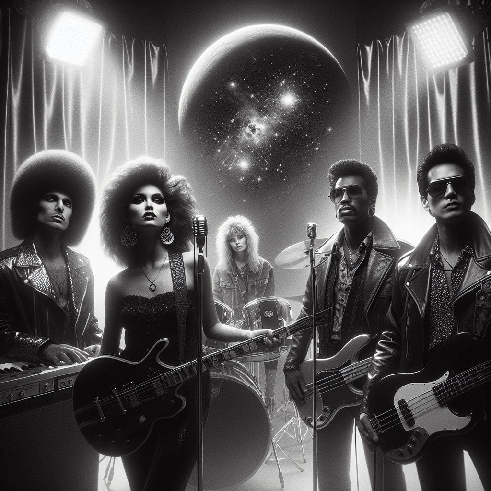

~ The Story ~
In the twilight of the 1980s, nestled between the auroras of Iceland and the warmth of Ghanaian sunrises, emerged a band as enigmatic as an untamed dream — Myopic Sunflowers. Their sound, a kaleidoscope of Cosmic Grit, blended Post-Punk's brooding introspection with the vibrant rhythm of Highlife, creating an auditory tapestry that defied the ordinary.
At the heart of this sonic tapestry was Óskar "Starry" Einarsson, the ethereal voice that led listeners through realms of lyrical mysticism. His voice, a haunting echo from the fjords, resonated with a clarity that pierced the soul. Starry's presence was that of a celestial navigator, guiding the band through cosmic soundscapes.
Miriam "Mimi" Mensah, the rhythmic pulse on the drums, infused each beat with a heartbeat of African warmth, her personality as vibrant as a sunrise over Accra. She was the heartbeat and the light, grounding the band with rhythms that danced on the edge of time.
Gunnar "Gus" Sigurdsson wielded his bass guitar like a brush, painting deep, resonant lines across the aural canvas. An introvert by nature, Gus was the invisible thread weaving the band’s diverse influences into a harmonious whole.
Lastly, Yaa "Sunshine" Addo, with her nimble fingers on the synthesizer, conjured galaxies from sounds. Her whimsical nature brought an air of magic, turning each performance into an odyssey.
Together, Myopic Sunflowers blossomed into legends, their music a transcendent blend of celestial and earthly, an opus for the ages.
~ Band Photo ~

Mgmt: Myopic Artists Group / Icelandic-Ghanaian
Óskar "Starry" Einarsson, Miriam "Mimi" Mensah, Gunnar "Gus" Sigurdsson, Yaa "Sunshine" Addo
~ The Members ~
| Óskar "Starry" Einarsson | lead vocals |
| The ethereal voice that led listeners through realms of lyrical mysticism. | |
| Miriam "Mimi" Mensah | drums |
| The rhythmic pulse on the drums, infusing each beat with a heartbeat of African warmth. | |
| Gunnar "Gus" Sigurdsson | bass guitar |
| An introvert by nature, wielding his bass guitar like a brush to paint deep, resonant lines. | |
| Yaa "Sunshine" Addo | synthesizer |
| With her nimble fingers, she conjured galaxies from sounds, bringing an air of magic to each performance. | |
~ Discography ~
| Celestial Shadows (1987) | |
| |
| Ethereal Dissonance (1988) | |
| |
| Transcendent Tapestry (1989) | |
| |